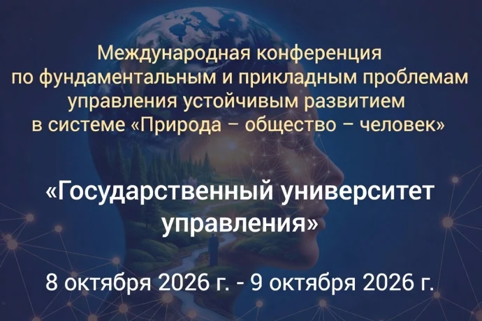

Информационное сообщение и проведении Международной конференции по фундаментальным и прикладным проблемам управления устойчивым развитием в системе "природа – общество – человек".
Федеральное государственное бюджетное образовательное учреждение высшего образования «Государственный университет управления» (далее - ГУУ) приглашает принять участие в работе Международной конференции по фундаментальным и прикладным проблемам управления устойчивым развитием в системе природа – общество – человек (далее - конференция), которая будет проводиться 8 октября 2026 г. – 9 октября 2026 г. в ГУУ.
В рамках конференции будут работать:
- Пленарное заседание «Управление устойчивым развитием в системе Природа – Общество – Человек»;
- Секция 1. «Устойчивое развитие и качество жизни населения регионов»;
- Секция 2. «Экологические аспекты устойчивого природопользования»;
- Секция 3. «Экологическое образование и просвещение»;
- Секция 4. «Спутник университетской науки: молодежные проекты для системы Природа – Общество – Человек»;
- Круглый стол Международной научной школы устойчивого развития имени П.Г. Кузнецова;
- Молодежный конкурс экологических плакатов «Моя страна».
ПРОГРАММА КОНФЕРЕНЦИИ: Программа_8-9.10.2026.pdf
К участию в конференции допускаются ведущие отечественные ученые и практики, научные и педагогические работники, обучающиеся по программам бакалавриата, магистратуры, подготовки научных и научно-педагогических кадров в аспирантуре образовательных организаций высшего образования под научным руководством научно-педагогических работников, соискатели ученой степени.
По результатам конференции планируются публикации научных работ участников конференции в виде статей (до 12 станиц) в сетевом научном издании «Международный электронный журнал. Устойчивое развитие: наука и практика» (https://www.yrazvitie.ru/). Журнал зарегистрирован в РИНЦ (https://www.elibrary.ru/title_about_new.asp?id=286...
К публикации принимаются не более одной работы от одного участника.
Формат конференции: смешанный.
Участие в конференции бесплатное. Для участия в работе конференции необходимо до 12:00 мск. 22 сентября 2026 г. включительно зарегистрироваться, пройдя по ссылке https://forms.yandex.ru/u/67c87b07e010db52a234f55a, и наполнить все обязательные поля. Статьи в формате MSWord прикрепляются во время прохождения электронной регистрации.
Заявки, поступившие после 12:00 мск. 22 сентября 2026 г. не принимаются и не рассматриваются.
Название файла со статьей должно содержать фамилию всех авторов и название самой статьи.
Контакты для справочной информации: Шамаева Екатерина Федоровна, pobisk@yandex.ru, +7 495 377-77-77 (доб. 3739)
Требования к оформлению статей для участия в конференции:
Образец оформления статей.docx
Требования к оформлению статей для участия в конференции.docx
1. В левом верхнем углу перед названием статьи необходимо указать индекс УДК (Универсальной десятичной классификации) и/или ББК, и/или DOI, и/или других классификационных индексов или систем: Times New Roman, 10 пт, прописными буквами, обычный шрифт, текст по левому краю, 12 пт интервальный отступ после текста.
2. Далее приводится название статьи: Times New Roman, 14 пт, прописными буквами, жирный шрифт, текст по левому краю, 12 пт интервальный отступ после текста. Название статьи не должно содержать более 80 символов, включая пробелы. Переносы в словах и знак конца абзаца между строками заголовка не допускаются. Точка в конце названия статьи не ставится.
3. Сведения об авторе(ах): Times New Roman, 10 пт, обычный шрифт, текст по левому краю. Указываются сведения на каждого автора, включая:
§фамилия, имя, отчество (полностью);
§ученая степень (сокращенно);
§ученое звание;
§место работы автора в именительном падеже. Может быть написана должность автора. Важно четко, не допуская иной трактовки, указать место работы конкретного автора.
4. Аннотация — текст статьи предваряется краткой аннотацией (до 10 строк): Times New Roman, 12 пт, обычный шрифт, курсив, текст по ширине, 12 пт интервальный отступ после текста. В аннотации следует изложить цели исследования, основные процедуры и методы, результаты и выводы. В ней должны быть выделены новые и важные аспекты исследования или разработки. Рекомендуется использовать количественные показатели, где это возможно.
5. После аннотации приводятся ключевые слова (одна-две строки): Times New Roman, 10 пт, обычный шрифт, текст по левому краю, 12 пт интервальный отступ после текста. Каждое ключевое слово или словосочетание отделяется от другого запятой или точкой с запятой.
6. Основная часть статьи. Параметры форматирования для основного текста:
§формат листа — А4;
В макете показано начало материала.